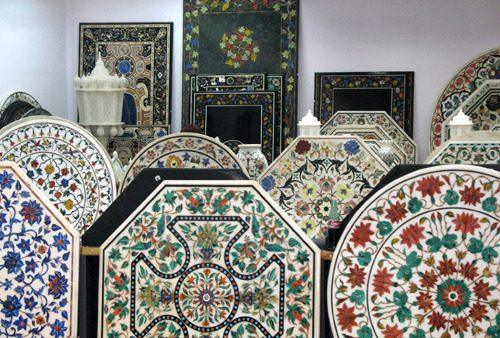

📖 Origin & Evolution
Marble Inlay Work, also known as Pietra Dura, is a traditional craft from Agra, Uttar Pradesh. This intricate art form flourished during the Mughal era, especially under Emperor Shah Jahan, who used it extensively in the Taj Mahal. The technique involves embedding semi-precious stones like lapis lazuli, jasper, malachite, and onyx into white marble to create floral, geometric, and calligraphic designs.
💡 Did You Know?
✨ Each design is hand-carved into marble before inlaying colorful stones.
🕌 The Taj Mahal is the most iconic monument showcasing marble inlay work.
💎 Stones like turquoise, jade, and carnelian are used for vibrant colors.
🌍 This craft has earned Agra global recognition as a hub of fine stone inlay art.
🎨 Popular Designs
Floral Motifs – Inspired by Persian and Mughal garden designs.
Geometric Patterns – Symmetrical and precise shapes.
Calligraphy – Quranic verses engraved and inlaid with black onyx.
Architectural Panels – Decorative slabs for palaces and mosques.
🎯 Quick Quiz:
Which monument is the finest example of Marble Inlay Work?